Córtex Estudos · 4º Semestre · Anato Pato II · Aula 04
Patologias Hepáticas
Anatomia, funções, clínica do hepatopata, histologia lobular e diagnóstico — a aula da Profa. Janaina que abre o simpósio de Hepatites A, B, C e Cirrose. Tudo o que vier no simpósio se apoia neste alicerce: o que o fígado faz e o que o paciente perde quando ele adoece.
1 · O fígado por fora: anatomia e vascularização dupla
- ~1.500 g, no quadrante superior direito do abdome, encaixado no domo do diafragma; revestido por cápsula de tecido conjuntivo.
- Macro: LOBOS — direito, esquerdo, quadrado e caudado. Micro: LÓBULOS (não confunda os dois níveis — a professora repetiu: lobo é macro, lóbulo é micro).
- Vesícula biliar: órgão piriforme e oco — fundo, corpo, colo e ducto cístico.
🎯 A vascularização que explica a doença: DUPLA aferência
O fígado recebe sangue por duas vias aferentes: a artéria hepática (do tronco celíaco, sangue rico em O₂ — 30–40% do fluxo) e a veia PORTA (junção das mesentéricas + esplênica, sangue venoso carregado de nutrientes — 60–70% do fluxo). Dentro do lóbulo, esse sangue percorre os capilares SINUSOIDES, em contato íntimo com os hepatócitos, e sai pela veia centrolobular → veias hepáticas direita e esquerda → veia cava inferior. Guarde este trajeto: é ele que entope na cirrose (hipertensão portal) e que explica a circulação colateral.
2 · Metabolismo energético: glicogênio, triglicerídeos e a glicemia 70–99
- O fígado armazena glicose como GLICOGÊNIO (também há estoque muscular), faz glicogenólise (glicogênio → glicose) e gliconeogênese (glicose a partir de aminoácidos e outros substratos).
- Glicemia normal: 70–99 mg/dL. A OMS baixou o teto de 100 para 99 há alguns anos — tirar 1 mg parece pouco, mas tem efeito psicológico: não deixar chegar à "casa da centena", um recado de risco diante da industrialização dos alimentos e do estilo de vida.
- Excesso de carboidrato: quando os estoques de glicogênio lotam, o hepatócito recicla — a estrutura bioquímica do carboidrato (C, H, O) é parecida com a do lipídio, e o excesso vira TRIGLICERÍDEOS, exportados nas lipoproteínas (VLDL/LDL/HDL — vesículas com proteína de endereçamento na superfície, cheias de colesterol e triglicérides).
🔗 Conexão com a esteatose
Esse é o elo com a esteatose hepática vista na Pato I: excesso crônico de carboidrato/álcool → síntese de triglicérides além da capacidade de exportar → gordura acumulando no hepatócito. Doença de depósito que mata hepatócitos e deflagra inflamação — um dos temas de fundo do simpósio.
3 · Proteínas plasmáticas: albumina, coagulação e trombopoetina
Albumina — a guardiã da água intravascular
- A pressão coloidosmótica do plasma depende da ALBUMINA: molécula grande que não atravessa a parede íntegra do vaso e atrai a água de volta ao compartimento intravascular.
- Síntese de albumina = papel do fígado, a partir dos aminoácidos da dieta (ovos, carnes, queijos…).
- Fígado doente → sem albumina → EDEMAS graves: membros, face e — a marca registrada — ASCITE, o acúmulo em cavidade abdominal, que pode distender o abdome, formar hérnias e comprimir o diafragma, comprometendo a respiração.
Fatores de coagulação
- ≈90% das proteínas da cascata da coagulação são produzidas no fígado, secretadas como ZIMOGÊNIOS (circulam inativas até a cascata ser acionada — via intrínseca ou extrínseca, fator XII em diante).
- Boa coagulação = quantidade satisfatória desses zimogênios na circulação = função hepática + aminoácidos disponíveis.
🎯 Trombopoetina — e a lição da dengue
O fígado sintetiza a TROMBOPOETINA, o hormônio que manda a medula produzir plaquetas. A professora disse que quase cortava esse detalhe da aula — até os picos de dengue: no fígado infectado, caem as proteínas da coagulação E o estímulo às plaquetas ao mesmo tempo. Sem plaquetas não há fase primária da hemostasia; sem fatores, não há fase secundária — por isso as hemorragias expressivas que podem matar rápido.
4 · Amônia → ureia: o preço do excesso de proteína
- Proteína em excesso NÃO é armazenada. O fígado degrada as proteínas a aminoácidos e depois desamina os aminoácidos, removendo os nitrogênios.
- O nitrogênio (5 elétrons na última camada) liga-se rápido a hidrogênios → AMÔNIA: pequena, estável e muito TÓXICA.
- O próprio fígado converte amônia → UREIA (ciclo da ureia, da bioquímica), que os rins conseguem excretar (transportadores tubulares decidem excreção/reabsorção).
⚠️ "Se encharcar de aminoácidos é uma grande bobeira"
Suplementação proteica além do necessário = estresse hepático (desmontar tudo e fabricar ureia) seguido de estresse renal (excretar). O recado clínico: há muita gente de "forma atlética" com fígado doente — "por fora, bela viola". Excesso alimentar de qualquer natureza cobra do fígado.
5 · Bilirrubina: da hemácia velha à papila duodenal
O caminho completo (guarde a sequência)
- 1Hemácia envelhece — vida média ~120 dias; a membrana fica rugosa e inflexível e ela não passa mais despercebida pelo baço.
- 2Macrófagos esplênicos fagocitam — o ferro volta para a medula (novas hemácias); a porção proteica do heme é degradada → BILIRRUBINA INDIRETA (não conjugada, hidrofóbica).
- 3Fígado CONJUGA — enzimas dos hepatócitos ligam a bilirrubina ao ácido glicurônico → BILIRRUBINA DIRETA (conjugada, solúvel em água) — pronta para agir no ambiente aquoso do intestino.
- 4Via biliar — canalículos biliares → ductos hepáticos direito + esquerdo → comum; pelo cístico a bile vai à vesícula (armazenamento); sob estímulo hormonal (contração), desce pelo COLÉDOCO até a papila duodenal (ampola de Vater).
- 5Ação no duodeno — emulsificação/digestão e absorção de gorduras. É a bile que dá cor às fezes.
6 · Indireta × direta — e o kernicterus
🎯 "Não basta pedir bilirrubina TOTAL"
Total = indireta + direta. Se o médico pede só a total, perde a capacidade de interpretar: não enxerga se o problema é de produção/conjugação (indireta alta) ou de excreção/obstrução (direta alta) — nem o risco de toxicidade. Peça sempre as frações.
- Indireta alta = perigo: molécula hidrofóbica em ambiente aquoso procura onde a hidrofobicidade seja aceita — membrana celular. Ela se deposita nos tecidos, e o que mais preocupa é o SNC, pela incapacidade regenerativa.
- Icterícia neonatal: imaturidade transitória da conjugação — comum, mas precisa de vigilância e fototerapia ("banho de luz"). Sem tratar, a deposição no SNC gera o KERNICTERUS: a criança nasce com sistema nervoso pleno e sai com sequelas neurológicas irreversíveis (a professora citou o grupo "Mães dos Kernícteros").
- Na doença hepática grave: hepatócitos morrem no meio do processamento — a bilirrubina vaza como está, ora conjugada, ora não (as duas) → icterícia com risco de depósito.
7 · Função imune: Kupffer, PCR e complemento
- Células de KUPFFER = os macrófagos residentes do fígado, dentro dos sinusoides: vigiam, fagocitam bactérias/partículas e, ao detectar patógenos ou morte de hepatócitos, deflagram a inflamação — recrutando células e liberando mediadores.
- O fígado é um órgão que "inflama com gosto" (como o intestino com seus agrupamentos linfoides): citocinas/interleucinas são abundantes nas patologias hepáticas — em especial IL-6, IL-1 e interferon.
🎯 PCR: a proteína (não a técnica!) — e por que o hepatopata infecta
Cuidado com a sigla: existe o PCR molecular (reação em cadeia da polimerase) e a PROTEÍNA C-REATIVA, produzida pelo fígado em resposta a citocinas inflamatórias — mesmo quando a inflamação é longe dele (pneumonia, infecção urinária, de garganta…). Função: acelerar a ativação do sistema COMPLEMENTO, dando eficácia ao reconhecimento e lise de patógenos. No hepatopata, a síntese de PCR cai → o complemento demora a ser acionado → vulnerabilidade real a infecções (o cirrótico é paciente crítico diante de gripes e infecções bacterianas).
8 · O hepatopata na prática: ascite, icterícia, colúria, acolia
A professora mostrou fotos que traduzem TUDO o que o fígado deixa de fazer:
- ASCITE — sem albumina, a água sai do vaso e se acumula no abdome: a "marca registrada do hepatopata grave".
- CIRCULAÇÃO COLATERAL visível na parede abdominal — a arquitetura hepática alterada (hepatócitos balonizados, fibrose) aumenta a pressão nos sinusoides → hipertensão PORTAL → o sangue busca rotas alternativas (favorecidas pelo contexto inflamatório com fatores angiogênicos). As mesmas colaterais aparecem como varizes de esôfago e formações vasculares em borda anal (hemorroidas).
- ICTERÍCIA — procure cedo, nas escleras e mucosas (onde não há melanina competindo). Não se quer descobrir icterícia em grau avançado — nesse ponto o paciente talvez já curse com complicações maiores.
- COLÚRIA — a bilirrubina filtrada sai na urina: "cor de Coca-Cola".
- ACOLIA FECAL — fezes claras, com "cara de massa de vidraceiro": falta pigmento no duodeno. Ou há ducto obstruído, ou os hepatócitos morrem antes de terminar a síntese/canalização (nas hepatopatias graves, às vezes nem a vesícula tem bile).
- Plasma ictérico — no tubo de sangue, o pigmento é visível a olho nu.
- Edemas — de membros inferiores (fáceis de examinar) e também de órgãos internos (cérebro, pulmão) — estes só visíveis por imagem: apagamento de sulcos, alargamento de giros, desvio de linha média.
- Astenia — fraqueza absurda: o metabolismo energético inteiro está comprometido.
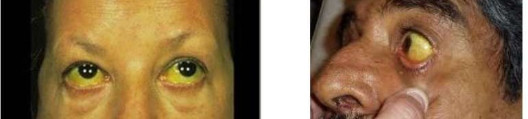
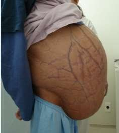
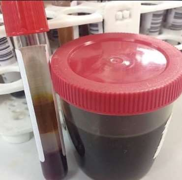
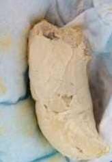
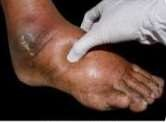
9 · Histologia: lóbulo, tríade portal, sinusoides e centrolobular
A arquitetura do lóbulo hepático
- 1Lóbulo delimitado por conjuntivo DELICADO — estroma escasso de colágeno tipo III (fibras reticulares): um arcabouço fino sustentando os cordões. Tem fibroblastos — e não pode ser espesso nem fibrótico.
- 2TRÍADE PORTAL na periferia — em cada canto do lóbulo chegam: ramo da artéria hepática (camada média mais espessa) + ramo da veia porta (maior calibre, parede fina) + ducto biliar. Artéria e veia = aferentes; o ducto drena a bile para fora. Nem todo corte flagra as três estruturas — depende do ângulo.
- 3Cordões de hepatócitos + SINUSOIDES — hepatócitos poliédricos, enfileirados ("cordões"); entre cada dois cordões, um capilar sinusoide — ramificação fina da artéria e da veia trazendo o sangue (com amônia para virar ureia, triglicérides, glicose…) em contato íntimo com o hepatócito.
- 4VEIA CENTROLOBULAR no centro — o sangue que percorreu os sinusoides cai nela → veias hepáticas → cava inferior. Sangue: periferia → centro. Bile: hepatócito → canalículos → ductos da periferia (sentidos opostos!).
🎯 Hepatócitos regeneram — mas não infinitamente
Os hepatócitos são extremamente hábeis em regenerar: necrose com cura rápida pode se resolver com regeneração completa. Mas a capacidade não é ilimitada — inflamação prolongada troca regeneração por cicatriz. É o pivô da diferença entre hepatite curada e cirrose.
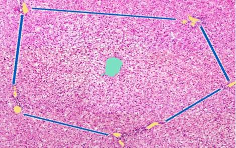
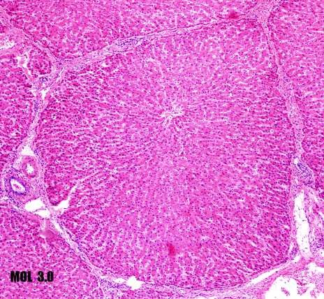
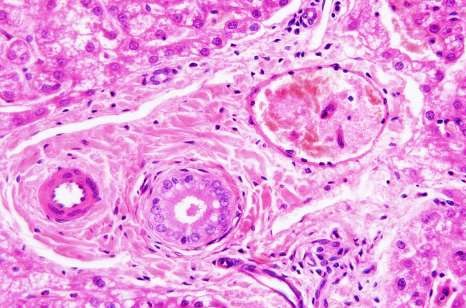
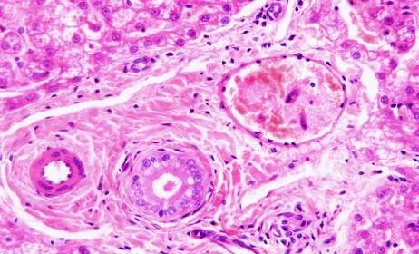
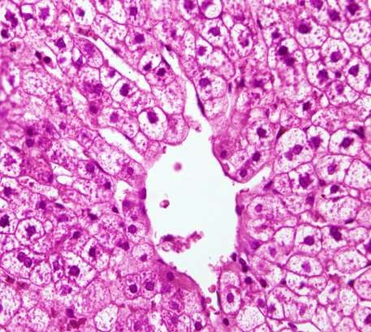
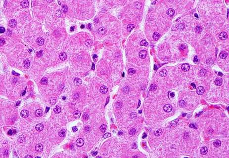
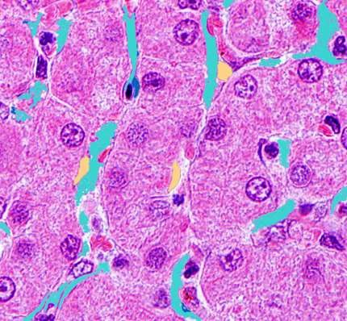
10 · Célula estrelada (Ito): a chave da fibrose
🎯 A célula que vira fibroblasto — o mesmo vilão da cirrose (e da pancreatite crônica)
Junto ao sinusoide vivem a célula endotelial (parede do capilar), a célula de KUPFFER (macrófago, dentro do lúmen) e a CÉLULA ESTRELADA (de Ito) — controladora da permeabilidade do sinusoide e armazenadora de lipídio. O problema: diante de citocinas inflamatórias (IL-6, IL-1, interferon), a estrelada se transforma em (mio)fibroblasto e passa a depositar colágeno nas fenestras dos sinusoides — exatamente onde a permeabilidade é vital. Fibrose ali = fim da perfusão do lóbulo. É o mesmo mecanismo celular já visto na pancreatite crônica: inflamação crônica → célula estrelada ativada → colágeno → órgão endurecido.
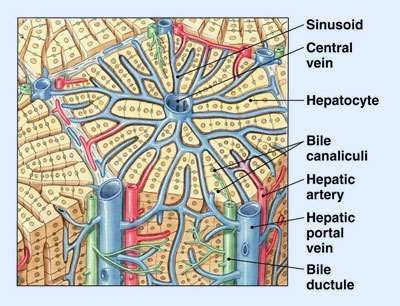
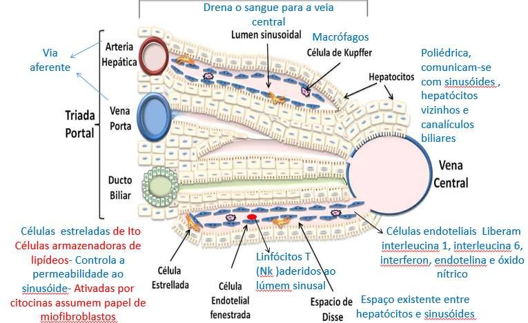
11 · Doença inflamatória: cura × cronicidade e as causas
Os dois caminhos da lesão inflamatória hepática
- 1CURA — se o agente é eliminado rápido, a necrose se resolve com REGENERAÇÃO (hepatócitos hábeis).
- 2CRONICIDADE — infecção/inflamação prolongada → agressão contínua → necrose + cicatrização: os efeitos cicatriciais (fibrose) aparecem e ficam mesmo depois que o vírus se vai. Desfecho final: cirrose.
- Expressão clínica (slide-síntese): icterícia, colúria, acolia fecal e astenia — mais as diarreias intensas que às vezes exigem hidratação/nutrição endovenosa, e a fraqueza do metabolismo energético afetado.
- Causas VIRAIS — o foco do simpósio: hepatites A, B e C têm vírus estruturalmente DIFERENTES entre si; a taxa de mutação de cada um determina a facilidade de o organismo eliminá-lo — e portanto o prognóstico e o risco de cronificação. As enchentes do Rio Grande do Sul trouxeram de volta diagnósticos de hepatite A que já eram raros.
- Medicamentosas — pela carga/variedade de fármacos (paciente oncológico, dor crônica) e pela incapacidade individual de metabolizar: mutações no citocromo P450 são frequentes e transformam a droga em elemento tóxico. É o território da medicina de precisão — o paciente que "não responde" ao antidepressivo ou ao analgésico pode simplesmente não metabolizá-lo (mutações herdadas ou adquiridas/epigenéticas); insistir subindo dose só intoxica mais.
- Autoimunes — anticorpos contra estruturas do hepatócito; quadros de hepatite autoimune foram vistos inclusive na COVID.
- Metabólicas — esteatose e alcoolismo (o etanol é metabolizado no fígado E provoca esteatose).
12 · Diagnóstico: sorologia, sondas moleculares e enzimas
O roteiro do simpósio pede: etiologia → fisiopatogenia → alterações funcionais → alterações morfológicas (macro e micro). No diagnóstico, três frentes:
① Sorologia (anticorpos)
- Fase aguda = IgM · fase crônica/memória = IgG. Hepatite A: anti-HAV total e IgG. Hepatite B: painel de antígenos/anticorpos (HBsAg e companhia). Método antigo e "obsoleto", mas o mais barato — ainda é o que se usa.
- Qualitativa × quantitativa 🎯: teste rápido (tem/não tem anticorpo) serve para TRIAGEM e diagnóstico — mas para ACOMPANHAR o paciente é preciso titulação: IgG crescente + IgM decrescente = soroconversão esperada. A professora avisou: caso clínico do simpósio acompanhado com sorologia qualitativa está errado.
② Sondas moleculares
- Conhecendo a sequência do vírus (A, B, C…), testa-se a hibridização com a amostra: detecta em qualquer fase, mesmo com carga viral baixa, antes da soroconversão. Limitação: caro — não é rotina; uso típico: bancos de sangue (não dá para esperar sorologia positivar para avisar o receptor).
③ Função e lesão do órgão
- Enzimas hepáticas — TGO/TGP (transaminases), fosfatase alcalina, LDH: moram dentro da célula; sobem no sangue quando há NECROSE de hepatócitos. Servem para prognóstico: um mês de hepatite com TGO/TGP só subindo (ou sem baixar) = evolução ruim.
- Demais exames que contam a função: albumina, proteínas da coagulação, contagem de plaquetas, PCR. Hepatite não é "só um problema do fígado": acompanha risco neurológico, coagulatório etc.
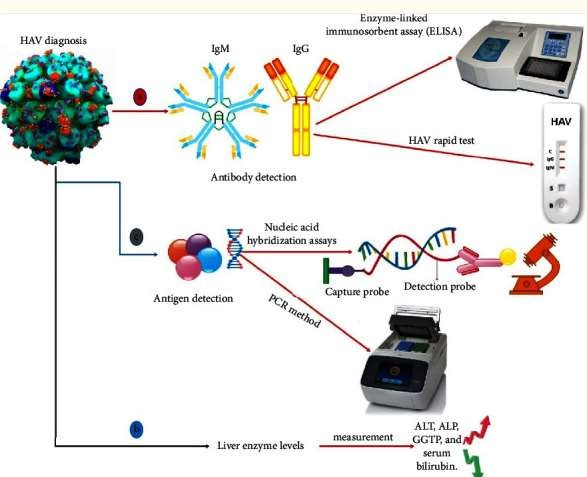
🔗 O simpósio
Temas sorteados: Hepatite A · Hepatite B · Hepatite C · Cirrose — "os fechos das hepatopatias mal-sucedidas". Cada grupo apresenta a doença + um caso clínico, amarrando causa → fisiopatogenia → sinais/sintomas → exames (com sorologia QUANTITATIVA no acompanhamento) → alterações macro e microscópicas.
✅ Resumo rápido da aula
- Anatomia: ~1.500 g, QSD, domo do diafragma; macro = LOBOS (D, E, quadrado, caudado), micro = LÓBULOS; vesícula piriforme (fundo, corpo, colo, cístico). Dupla aferência: artéria hepática (O₂, 30–40%) + veia porta (mesentéricas+esplênica, 60–70%) → sinusoides → centrolobular → hepáticas → cava.
- Funções: glicogênio/glicogenólise/gliconeogênese (glicemia 70–99); excesso de carboidrato → triglicérides (VLDL/LDL/HDL); albumina (coloidosmótica — sem ela, edema/ASCITE); 90% dos fatores de coagulação (zimogênios); trombopoetina (dengue = hemorragia dupla); amônia → ureia; bilirrubina; células de Kupffer; PCR → complemento.
- Bilirrubina: hemácia (120 d) → baço → indireta (hidrofóbica, tóxica — deposita no SNC → kernicterus; fototerapia no neonato) → conjugação com ácido glicurônico → direta (solúvel) → canalículos → ductos → vesícula → colédoco → papila. Pedir INDIRETA + DIRETA, não só a total.
- Hepatopata: ascite + circulação colateral (hipertensão portal → varizes de esôfago/hemorroidas), icterícia (escleras primeiro), colúria ("Coca-Cola"), acolia ("massa de vidraceiro"), edemas internos (imagem), astenia, vulnerabilidade a infecções (sem PCR).
- Histologia: lóbulo com conjuntivo DELICADO (colágeno III); tríade portal na periferia (artéria + veia porta + ducto); cordões de hepatócitos com sinusoide entre cada dois; centrolobular no centro; sangue periferia→centro, bile centro→periferia.
- Célula estrelada (Ito): controla permeabilidade e armazena lipídio; com citocinas (IL-6, IL-1, IFN) vira fibroblasto → colágeno nas fenestras → fibrose → cirrose. Kupffer = macrófago do sinusoide.
- Doença inflamatória: cura (regeneração) × cronicidade (fibrose que fica mesmo sem o vírus). Causas: virais (A/B/C — mutabilidade define prognóstico), medicamentosas (carga + citocromo P450/medicina de precisão), autoimunes, metabólicas.
- Diagnóstico: sorologia IgM (aguda) × IgG (crônica); qualitativa p/ triagem, QUANTITATIVA p/ acompanhar (IgG↑ + IgM↓); sondas moleculares (qualquer fase; caras; banco de sangue); TGO/TGP/FA/LDH sobem com necrose (prognóstico); + albumina, coagulação, plaquetas, PCR.
🧫 Resumão Pré-Prova — Patologias Hepáticas
Revisão da véspera · Anato Pato II · Aula 04 (Profa. Janaina) · só o que foi enfatizado
- ~1.500 g · QSD · domo do diafragma · cápsula conjuntiva · vesícula piriforme (fundo, corpo, colo, cístico).
- Macro = LOBOS (direito, esquerdo, quadrado, caudado) · micro = LÓBULOS.
- Dupla aferência: artéria hepática (tronco celíaco, O₂, 30–40%) + veia PORTA (mesentéricas + esplênica, 60–70%).
- Trajeto: aferentes → sinusoides → veia centrolobular → veias hepáticas D/E → cava inferior.
| Função | Se falhar… |
|---|---|
| Glicogênio · glicogenólise · gliconeogênese (glicemia 70–99) | metabolismo energético afetado → astenia |
| Excesso de carboidrato → triglicérides (VLDL/LDL/HDL) | esteatose |
| Albumina (pressão coloidosmótica) | edemas → ASCITE (marca do hepatopata grave) |
| ~90% dos fatores de coagulação (zimogênios) | hemorragias |
| Trombopoetina → plaquetas na medula | plaquetopenia — na dengue, déficit duplo → hemorragia grave |
| Amônia → UREIA (excreção renal) | amônia tóxica acumula; excesso proteico = estresse hepático + renal |
| PCR (proteína C-reativa) → acelera o complemento | vulnerabilidade REAL a infecções |
| Conjugação da bilirrubina | icterícia, colúria, acolia, kernicterus |
- Caminho: hemácia ~120 d → baço (macrófagos) → ferro volta à medula · heme → INDIRETA (não conjugada, hidrofóbica) → fígado conjuga c/ ácido glicurônico → DIRETA (solúvel) → canalículos → ductos D+E → comum → cístico/vesícula → colédoco → papila duodenal.
- Pedir INDIRETA + DIRETA — só a total não permite interpretar (produção × excreção × toxicidade).
- Indireta alta = deposita em tecido; pior no SNC → KERNICTERUS (sequela irreversível). Neonato: fototerapia + vigilância.
- Hepatopatia grave: hepatócito morre no meio do processamento → vaza conjugada E não conjugada.
- Ascite ± circulação colateral na parede = hipertensão PORTAL → procurar varizes de esôfago e hemorroidas.
- Icterícia: detectar CEDO em escleras/mucosas (sem melanina competindo).
- Colúria: urina "cor de Coca-Cola" · Acolia: fezes "massa de vidraceiro" (obstrução OU hepatócito morre antes de canalizar).
- Plasma ictérico no tubo · edema de MMII e de órgãos internos (só por imagem: apagamento de sulcos, desvio de linha média) · astenia.
- Lóbulo delimitado por conjuntivo DELICADO (colágeno III/reticular) — nunca espesso/fibrótico.
- Tríade portal (periferia): ramo de artéria (média espessa) + ramo de veia porta (calibrosa, parede fina) + ducto biliar. Nem todo corte mostra as três.
- Cordões de hepatócitos (poliédricos, enfileirados); 1 sinusoide entre cada 2 cordões; veia centrolobular no centro.
- Sentidos opostos: sangue periferia→centro · bile centro→periferia (canalículos→ductos).
- Hepatócito: regeneração excelente, mas não infinita.
- Cura (agente eliminado rápido → regeneração) × Cronicidade (agressão prolongada → necrose + cicatrização → fibrose que FICA mesmo sem o vírus → cirrose).
- Virais (foco do simpósio): A, B, C — vírus estruturalmente diferentes; mutabilidade define prognóstico/cronificação. Enchentes do RS → hepatite A voltou.
- Medicamentosas: carga/variedade de fármacos + mutação do citocromo P450 (droga não metabolizada = tóxica; medicina de precisão; subir dose só intoxica).
- Autoimunes (anticorpos anti-hepatócito; vistas na COVID) · Metabólicas (esteatose, álcool).
- Sorologia: IgM = fase aguda · IgG = crônica/memória. Hep A: anti-HAV total/IgG · Hep B: HBsAg e painel. Barato, é o que se usa.
- Qualitativa × quantitativa: teste rápido = TRIAGEM/diagnóstico; acompanhamento exige TÍTULOS (IgG↑ + IgM↓ = soroconversão). Caso clínico acompanhado com sorologia qualitativa = ERRADO.
- Sondas moleculares: detectam em qualquer fase (antes da soroconversão, carga baixa); caras → uso em banco de sangue, não rotina.
- Enzimas (TGO/TGP, fosfatase alcalina, LDH): sobem quando há NECROSE — prognóstico (1 mês com TGO/TGP subindo = ruim).
- Completam: albumina, proteínas da coagulação, plaquetas, PCR.
- Roteiro do simpósio: etiologia → fisiopatogenia → alterações funcionais → alterações morfológicas (macro/micro). Temas: Hepatite A · B · C · Cirrose.
- Lobo × lóbulo: macro (D/E/quadrado/caudado) × micro (unidade histológica).
- Artéria hepática × veia porta: O₂, 30–40%, média espessa × nutrientes, 60–70%, calibrosa.
- Bilirrubina indireta × direta: não conjugada/hidrofóbica/tóxica × conjugada (ác. glicurônico)/solúvel.
- PCR proteína × PCR técnica: proteína C-reativa (fígado → complemento) × reação em cadeia da polimerase.
- Kupffer × estrelada (Ito): macrófago do lúmen × pericito de permeabilidade/lipídio que VIRA fibroblasto.
- Sorologia qualitativa × quantitativa: triagem/diagnóstico × acompanhamento (títulos IgG/IgM).
- IgM × IgG: fase aguda × fase crônica/memória.
- Sangue × bile no lóbulo: periferia→centro × centro→periferia.
- Enzimas altas × função baixa: TGO/TGP = NECROSE em curso × albumina/coagulação/plaquetas = o que o fígado deixou de fazer.
- "Abdome globoso + veias na parede" → ascite + colateral → hipertensão portal → varizes de esôfago.
- "Urina Coca-Cola + fezes massa de vidraceiro" → colúria + acolia → bilirrubina não chega ao duodeno.
- "RN ictérico não tratado + sequela neurológica" → kernicterus (indireta no SNC).
- "Dengue + sangramento" → fígado: ↓fatores de coagulação + ↓trombopoetina.
- "Hepatopata com infecções de repetição" → sem PCR → complemento lento.
- "Citocinas + célula estrelada" → fibrose/cirrose.
- "Não responde ao fármaco / hepatite por remédio" → citocromo P450 / medicina de precisão.
- "Banco de sangue" → sonda molecular (detecta antes da soroconversão).
Banco de Questões — Patologias Hepáticas
Anato Pato II · Aula 04 · estilo ENADE/residência.